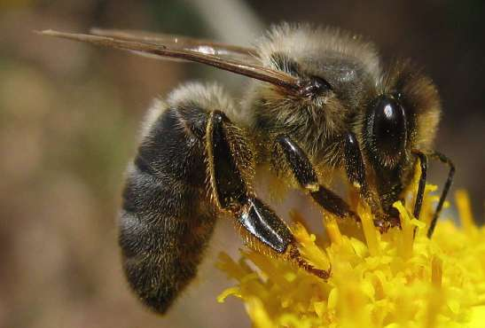

img ve devamında src komutuyla işleme başlanır. İlk önce Çalışılacak görseller html dosyasının bulunduğu klasöre alınır.
Boyutlarla width ve height komutlarıyla değişiklik yapılabilir. Fakat height bozulmaya neden olabilir.
görsel yüklenememe ihtimaline karşı alt komutuyla onun hakkında kısa bilgi girişi yapılabilir.

eğer HTML dosyasının yeri değişirse "../" bir üst dizine götürür . Yani ../images/honey-bee.jpg yazılmalıdır

bir web adresinden de görsel alınabilir. src içine resim adresi copy-past yapılır